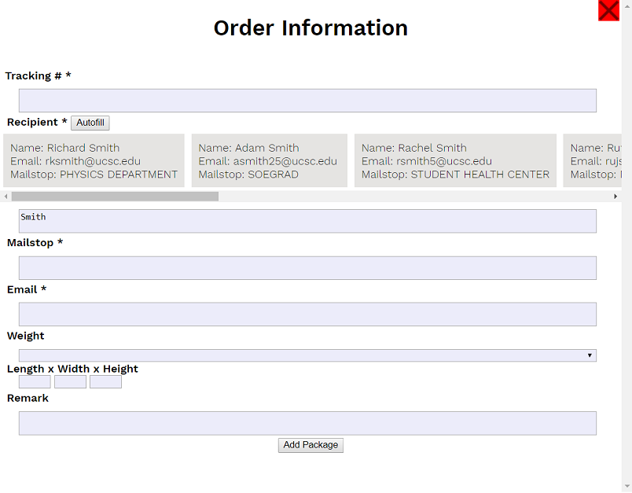
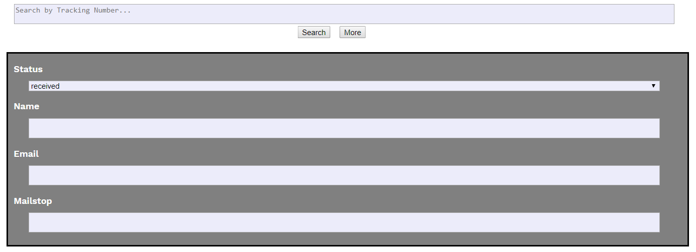
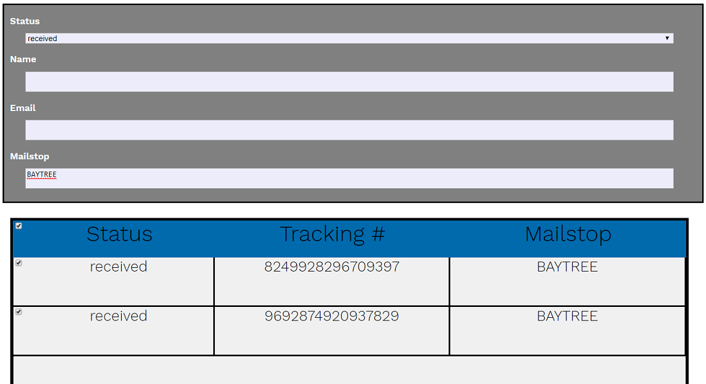
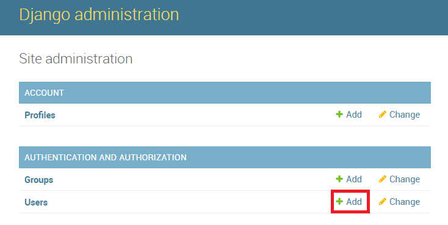
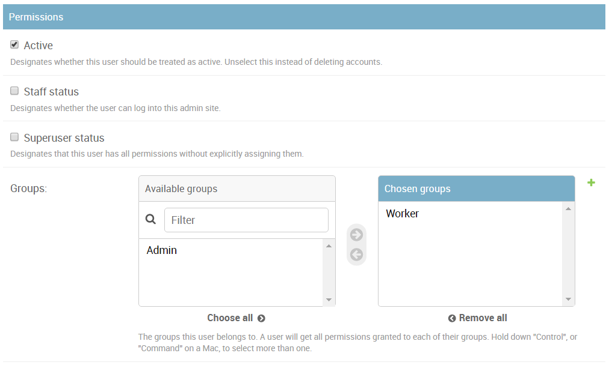
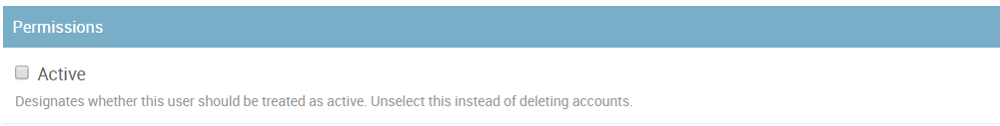

On the package management page, click on the 'New Package' button to bring up the blank receiving form.
First enter the tracking number of the package (barcode scanner compatible). Next, fill out the recipient name. The case-sensitive 'autofill' is available for quickly filling in the 'Mailstop' and 'Email' fields. Finally, while not required, employees may include weight and dimension information as well as any miscellaneous remarks. Click 'Add Package' to save the package into the database.
On the package management page, click on the 'More' button under the search tool to bring up advanced search options.
Here, employees may search for packages by: delivery status, recipient name, email, as well as by their mailstop.
On the package management page, select the packages to be delivered and click 'Deliver Package' to deliver.
When delivering packages to individual mailstops, the recommended way is to first perform an advanced search by 'Status' and 'Mailstop'.
For example, packages headed for the Baytree Book Store can be found by searching for the status 'Received' and the mailstop 'BAYTREE'. Afterwards, simply click the top checkbox to select all listed packages and deliver.
On the package management page, click the package to be updated and a form will appear with the package information. Simply make any changes and click 'Update' to save.
First access the admin account tools, by clicking on the 'Admin' tab on the Home navigation bar. (Note: only admins are able to access) Next, click 'Add+' next to Users.
After adding the initial user information, click 'Save and continue editing' to assign the account to the 'Worker' group. This will give the new employee all the 'Worker' privileges. To create a new admin account, simply assign it to the 'Admin' group. (User permissions will be automatically set by group.)
Finally, click 'Save' to finalize changes.
First access the admin account tools, by clicking on the 'Admin' tab on the Home navigation bar. (Note: only admins are able to access) Next, click on 'Users' and select a user to change.
Uncheck 'Active' in the permission section to remove access for the employee account.